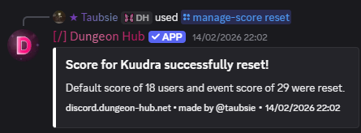

/manage-score reset ✏️
Arguments
Name | Type | Description | Optional? | Additional |
|---|---|---|---|---|
| Autocompleted String | Identifier of the carry type to reset. | ❌ No | Max length: 30 |
| Enumeration | Choose which score to reset (Default, Event, Both). | ❌ No | — |
Examples
/manage-score reset carry-type: kuudra reset-type: Both

Notes
Displays counts of users whose scores were reset.
21 August 2026